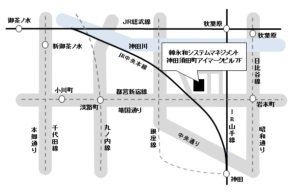

時下ますますご清祥のこととお慶び申し上げます。
毎々格別のご愛顧を賜り、厚くお礼申しあげます。
さて、この度、弊社は東京支社を下記に移転することとなりました。
今後とも一層のご支援ご指導のほどお願い申し上げます。
新住所
郵便番号 : 101‐0041
住所 : 東京都千代田区神田須田町2丁目3番地1 神田須田町アイマークビル7F 地図
電話番号 : 03-6206-0880
ＦＡＸ : 03-6206-0886
※7月１日よりビル名が【 NBF神田須田町ビル 】に変更になります。なお、住所および電話番号に変更はございません。
業務開始日平成27年5月25日
